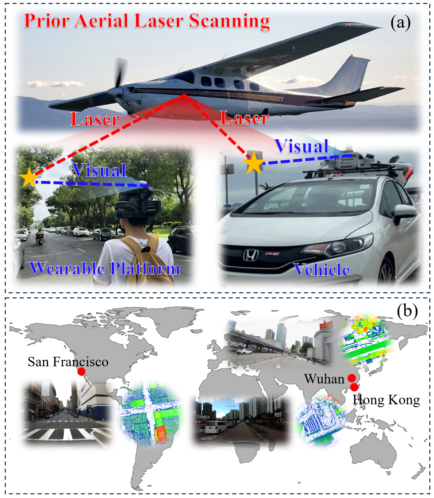

Global distribution of our dataset on the map.

Main contributions：
(1) We present a new large-scale dataset that enables aerial-ground cross-modal localization by combining ground-level imagery from mobile mapping systems with ALS point clouds. The data span three representative urban areas—Wuhan, Hong Kong, and San Francisco—and will be made publicly accessible to the research community.
(2) We propose an indirect yet scalable approach for generating accurate 6-DoF ground-truth image poses. This is achieved by registering mobile LiDAR submaps to ALS data using ground segmentation and façade reconstruction, followed by multi-sensor pose graph optimization.
(3) We establish a unified benchmarking suite for both global and fine-grained I2P localization, and evaluate state-of-the-art methods under challenging cross-view and cross-modality conditions. Future research trends are summarized according to the evaluation results.